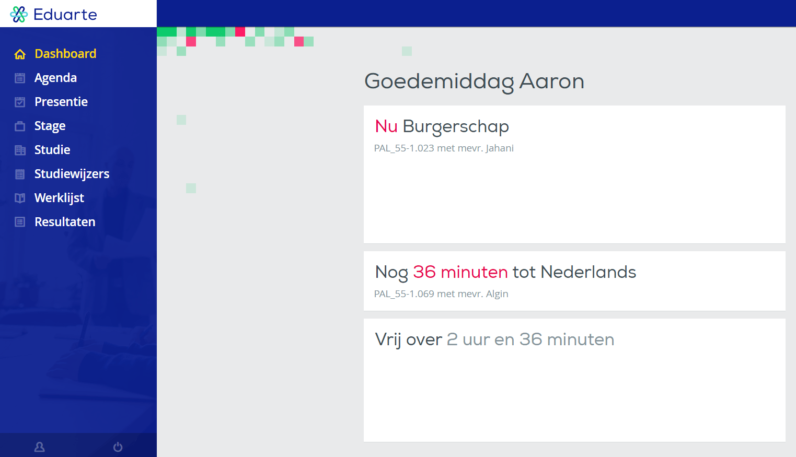

Eduarte
Eduarte is het marktleidende onderwijsinformatiesysteem voor het mbo. Het biedt een perfecte informatievoorziening voor studenten, docenten, administratie en management. Dit maakt Eduarte een belangrijke stap op weg naar volledige integratie van informatiebeheer. Kenmerken van Eduarte: intuïtief, gebruiksvriendelijk, flexibel, modulair, diepe integratie, razendsnelle ontwikkeling, keuzevrijheid... De onderliggende technologie geeft gebruikers flexibel onderwijs. Eduarte integreert leren en testen, toezicht en verantwoording, management en facilitering. Dit brengt ons dichter dan ooit bij het ideale applicatielandschap. Het Eduarte-concept is vrij te combineren met andere servicemodules of systemen van derden.
Dashboard
het eerste dat je ziet als je de Eduarte website opent, is het dashboard. Hier zie je hoelang je nog hebt tot je volgende les, hoeveel tijd je nog hebt tot je vrij bent en om hoe laat je de volgende dag begint. Aan de linkerkant zie je de sidebar, hier zie je verschillende opties die je naar andere webspagina's sturen, zoals de Agenda, waar jij je rooster kan zien, de Presenties, waar jij een overzicht van je absentie op school kan zien etc.
Profiel
Dit is de profielpagina, hier kan je veel dingen doen, zoals je e-mailadres wijzigen, je telefoonnummer wijzigen, je profielfoto bewerken, de taal veranderen en ook vind je hier het bezoekadres van de school als je een vraag over iets heb.
Presenties & absenties
In de presentiepagina vind je drie cirkeldiagramen die aangeven hoeveel uren je aanwezig bent geweest.
In de absentiepagina vind je drie cirkeldiagramen die aangeven hoeveel uren je afwezig bent geweest.